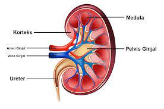

Ginjal

Ginjal adalah organ tubuh yang berbentuk seperti kacang dengan panjang sekitar 10-12 cm seukuran kepalan tangan. Letaknya di bawah tulang rusuk bagian belakang, dan dekat bagian tengah punggung pada kedua sisi tulang belakang. Ginjal adalah salah satu organ dengan fungsi vital dalam kehidupan.
Ginjal terdiri dari dua bagian, yaitu kiri dan kanan, hal tersebut menunjukan bahwa ginjal merupakan organ yang sepasang. Organ ini mengandung sekitar satu juta nefron, yaitu saringan darah yang sangat kecil. Maka dari itu, tugas utamanya adalah menyaring darah. Saat organ ini terganggu, ada banyak masalah pada tubuh yang dapat terjadi.
Mengenal Fungsi Ginjal
Setiap orang tahu jika ginjal memiliki fungsi yang sangat vital. Organ ini menyaring sekitar 200 liter darah per harinya. Selain itu, ginjal juga dapat menjadi konverter vitamin D di dalam tubuh serta mengatur keseimbangan asam-basa pada tubuh. Beberapa fungsi ginjal lainnya yang perlu diketahui, yaitu:
1. Menyaring dan Membuang Limbah
Salah satu fungsi ginjal adalah membuang racun, kadar garam berlebih, air dan mineral yang berlebih, serta limbah yang mengandung nitrogen (urea). Darah dapat mengalirkan semua limbah ini menuju ginjal untuk dibuang. Limbah tersebut diubah menjadi urin yang terkumpul di panggul ginjal yang akhirnya keluar dari tubuh. Tanpa ginjal, limbah dan racun dapat menumpuk di dalam darah dan menimbulkan gangguan kesehatan.
2. Mengendalikan Keseimbangan Air
Fungsi ginjal lainnya yang perlu diketahui adalah mengendalikan dan memantau keseimbangan air dalam tubuh. Melalui organ ini, seluruh jaringan tubuh dipastikan menerima air agar dapat bekerja dengan baik. Ginjal dapat bereaksi terhadap terjadinya perubahan kadar air dalam tubuh. Ginjal mampu menahan air saat tubuh membutuhkannya, sehingga tubuh tidak mengalami dehidrasi.
3. Mengatur Sel Darah Merah
Fungsi ginjal lainnya yang perlu diketahui adalah mengatur sel darah merah. Peredaran darah membutuhkan oksigen. Saat tubuh tidak mendapatkan oksigen yang cukup, maka ginjal akan mengeluarkan hormon eritropoietin. Hormon tersebut dapat merangsang produksi sel darah merah lebih banyak, agar tubuh mendapatkan oksigen lebih banyak. Jika sel darah merah atau kadar oksigen sudah normal, hormon tersebut berhenti diproduksi.
4. Mengatur Tekanan Darah dan Kadar Garam
Mengatur tekanan darah dan kadar garam dalam darah juga merupakan fungsi ginjal yang tak kalah penting. Ginjal akan memproduksi enzim renin sebagai prosesnya. Ketika menyaring darah, aliran dan tekanan darah yang stabil dibutuhkan oleh ginjal.
Bagian Ginjal Manusia
Setelah mengetahui fungsi dari ginjal, kamu juga perlu tahu berbagai bagian dari organ tersebut. Bila diklasifikasikan bagiannya, ginjal manusia terdiri dari tiga bagian, yaitu korteks ginjal, medula ginjal, dan pelvis ginjal. Berikut penjelasannya:
1. Korteks Ginjal
Korteks ginjal adalah bagian paling luar dari ginjal dan dikelilingi oleh kapsul ginjal. Bagian ini juga dikelilingi oleh lapisan lemak, sehingga juga berguna untuk melindungi struktur dalam ginjal dari kerusakan.
2. Medula Ginjal
Medula terdiri dari bagian bernama lengkung Henle dan piramida ginjal, yang merupakan struktur kecil yang berisi tubulus dan nefron. Tubulus berfungsi untuk mengangkut cairan masuk ke dalam ginjal dan juga urine agar ke luar ginjal. Untuk nefron, bagian untuk berguna untuk mengambil darah, memetabolisme nutrisi, serta membantu untuk mengeluarkan limbah yang telah disaring.
3. Pelvis Ginjal
Pelvis adalah bagian terdalam ginjal yang berbentuk corong. Pelvis berfungsi sebagai wadah penampung urine sementara dan jalur untuk cairan berpindah dari ginjal menuju kandung kemih. Akhirnya, urine dialirkan ke ureter dan dibuang keluar dari tubuh.